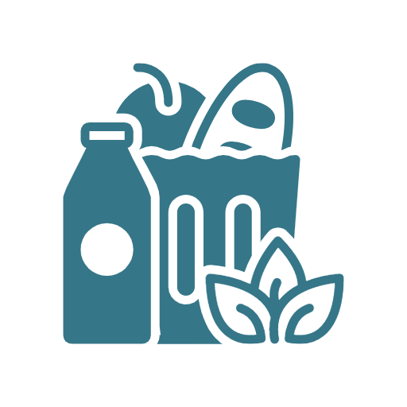

Find free food near me
Encuentra comida gratis cerca de mí
Tìm đồ ăn miễn phí gần tôi
Find the following near you:
Senior meal programs for seniors 60 yrs & older
School meal programs for youth 18 yrs & younger
Community meal programs serving all ages
Free groceries for low-income residents